Spraak naar tekst — zonder account of login. Deze handleiding legt in een paar stappen uit hoe je een opname laat transcriberen en er een verslag van maakt.
Kort vooraf, zodat je met een gerust hart begint:
Open de site in je browser. Je hoeft niet in te loggen en geeft geen persoonsgegevens op. Bovenaan zie je een voortgangsbalk (Kiezen → Verwerken → Transcript & verslag) die meeloopt. Er zijn twee manieren om te beginnen: een bestand uploaden of direct opnemen.
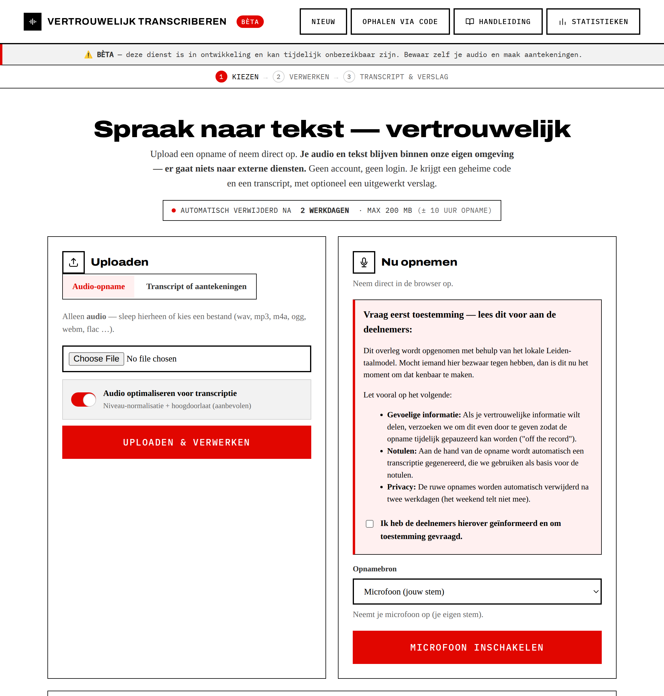
Onder de twee kaarten kies je of er automatisch een verslag wordt gemaakt zodra de transcriptie klaar is. Zo hoef je niet twee keer te wachten (eerst transcript, dan verslag): alles wordt in één keer ingepland. Kies Volledig verslag (aanbevolen), Geen verslag of Zelf kiezen… (losse secties / eigen prompt / context). Je kunt het later op het resultaatscherm altijd opnieuw draaien met andere opties.
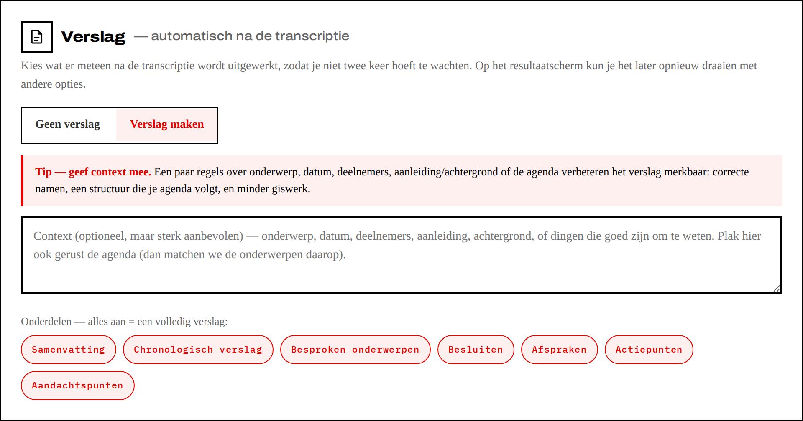
Bovenaan de upload-kaart kies je wat je aanlevert: een audio-opname of tekst (een transcript of je aantekeningen).
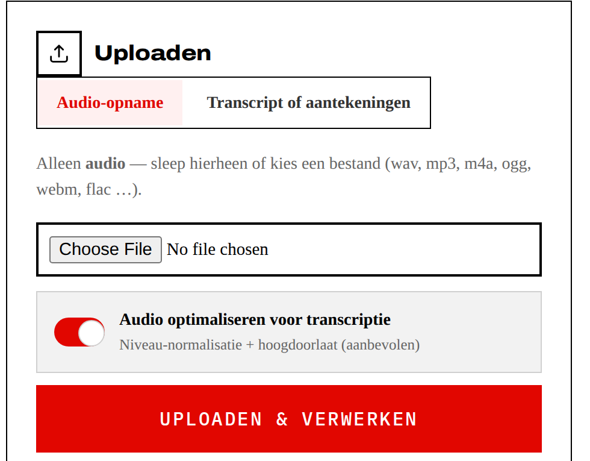
Mag je niet opnemen maar heb je wél aantekeningen? Of heb je al een transcript? Kies dan Transcript of aantekeningen. Je maakt zonder audio direct een verslag.
.txt,
.md, Word (.docx), .rtf of .odt.Neem rechtstreeks in de browser op. Kies bovenaan de kaart eerst de Opnamebron, klik dan op de inschakel-knop en geef toestemming.
Teams opnemen: kies Vergaderingsgeluid, klik op delen, kies het Teams-venster/-tabblad en vink “Ook tabblad-/systeemgeluid delen” aan. Voor de Teams-desktop-app deel je het hele scherm mét systeemgeluid — dat kan in Chrome/Edge op Windows; op macOS lukt alleen tabblad-geluid, gebruik daar Teams in de browser.
Boven de knoppen zie je een niveaumeter met een dB-schaal, een gemarkeerde goede zone en een piek-indicator. Praat even en zet de gevoeligheid zo dat de balk in de goede zone piekt — “Zone: goed”. Groen-genoeg is belangrijker dan hard; vermijd “te hard” (clipping).
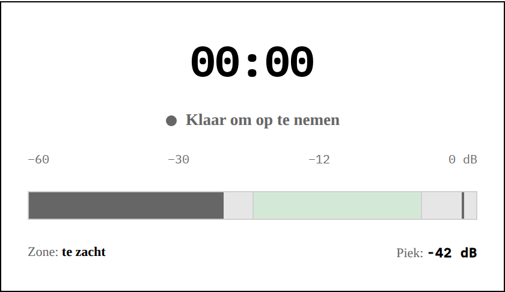
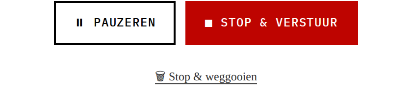
Kies bij Opnamekwaliteit de bitrate. Vergadering — 48 kbps (standaard) is de aanbevolen keuze: goede kwaliteit voor meerdere sprekers in een ruimte, en toch compacte bestanden. Voor één spreker dichtbij volstaat Spraak — 32 kbps; voor lastige akoestiek kun je Hoog — 64 kbps nemen.
Deze optie (standaard aan) verbetert de audio server-side vóór transcriptie met een lichte hoogdoorlaat (weg met bromtonen) en niveau-normalisatie (consistent volume). Dit maakt de herkenning robuuster zonder de stem te beschadigen. Laat 'm gewoon aan staan, tenzij je precies weet dat je het niet wilt.
Na het versturen zie je een statuspagina die je door de wachtfasen loodst. Zolang je in de rij staat, zie je je plek in de wachtrij: “Transcriptie is nummer 3 in de wachtrij” → “Transcriptie wordt gemaakt…”. Heb je vooraf een verslag gekozen, dan volgt daarna “Transcript klaar. Verslag is nummer N in de wachtrij” → “Verslag wordt gemaakt…”, zodat je niet een half-af scherm te zien krijgt. Het verloopt niet: is de server druk, dan wacht je gewoon even (desnoods tot een dag) in plaats van een foutmelding te krijgen. Zodra alles klaar is, verschijnt het resultaat automatisch — je hoeft niet te verversen of te klikken. Je kunt ook de sessie-code kopiëren en later terugkomen (zie §7). Bovenaan staat je code met de knop ⬇ Download opname (het originele geluidsbestand). Rechts van de bewaartermijn kun je met 🗑 Nu verwijderen de audio, het transcript én het verslag direct wissen.
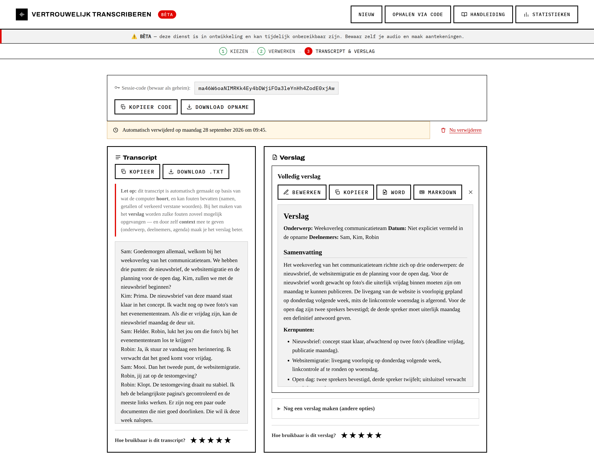
Bij Verslag → Geavanceerde opties staat de schakelaar Sprekersidentificatie (standaard aan als de tool het ondersteunt). Staat die aan, dan verdeelt de tool de opname in sprekers en zie je op het resultaat een blok Sprekers bij het transcript. Per herkende spreker (SPREKER A, B, …) kun je een fragment van ~3 seconden beluisteren om te horen wie het is, en er een naam aan koppelen. Die namen worden lokaal in je browser bewaard en verschijnen in het transcript, het verslag en de export — ze gaan niet naar de server. Het transcript krijgt de labels/namen aan het begin van elke beurt.
Let op — bekende beperkingen. Sprekersherkenning is niet perfect: bij veel door-elkaar-praten of erg stille deelnemers kan het sprekers samenvoegen of juist opsplitsen. Luister bij twijfel een fragment; en als twee labels dezelfde persoon blijken, geef ze gewoon dezelfde naam — dan lopen ze in het verslag vanzelf samen.
Heb je bij de start een verslag gekozen, dan staat het hier al klaar (of is het net klaar), netjes opgemaakt. Wil je een ander verslag? Klap Verslag opnieuw maken uit en kies andere opties:
Wil je in plaats van een verslag een vaste set vragen beantwoord hebben? Klap bij de
verslag-opties Of: beantwoord vragen uit een sjabloon uit en plak of upload
je vragen (één per regel; .txt/.md/Word/.docx). De tool beantwoordt dan
elke vraag op basis van het gesprek, in jouw volgorde. Staat een antwoord niet in het
materiaal, dan schrijft het model dat expliciet (“niet in het materiaal besproken”) in
plaats van iets te verzinnen. Op het resultaatscherm kun je dit ook achteraf doen.
Gaan bepaalde namen, vaktermen of afkortingen vaak fout? Vul ze in bij Woordenlijst / jargon (één per regel), of kies een lijst uit het menu en pas 'm aan. Dat helpt twee keer: de transcriptie herkent de termen beter, en het verslag gebruikt de juiste schrijfwijze. Werkt ook zonder verslag (dan alleen voor de transcriptie).
Context is de grootste kwaliteitswinst. Een paar regels context maken het verschil tussen een redelijk en een echt goed verslag: correct gespelde namen, een indeling die je agenda volgt, betere kadering en merkbaar minder giswerk. Het kost tien seconden en loont bijna altijd — vul het dus in als je even de kans hebt.
Bij Context kun je van alles meegeven wat het gesprek helpt duiden: onderwerp, datum en deelnemers, maar ook de aanleiding, relevante achtergrond en dingen die goed zijn om te weten. Dat verbetert namen en data en helpt het model het verslag te kaderen, zonder te gokken. Plak je hier de agenda, dan probeert het model de onderwerpen op die agendapunten te matchen (zelfde volgorde en benamingen), en benoemt het welke agendapunten niet aan bod kwamen. De context is achtergrond: besluiten en actiepunten komen uit het transcript zelf.
Waarom dit hier extra telt: we draaien bewust een kleiner, lokaal taalmodel — dat houdt je data vertrouwelijk, maar een kleiner model is wél gevoeliger voor een paar herkenbare foutjes, zeker omdat het transcript geen sprekerlabels heeft. Goede context vangt die grotendeels op.
Zet daarom in de context:
Het model werkt uitsluitend op basis van het transcript: het verzint niets en markeert onzekere namen/getallen met [?]. Elk verslag kun je bewerken, kopiëren of downloaden als Word (.docx) of .md:
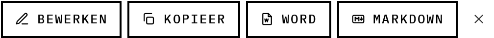
Klopt er iets niet, of wil je nog iets toevoegen? Klik op Bewerken bij het verslag. Er opent een editor waarin je de tekst aanpast zoals in een tekstverwerker — koppen, vet en cursief, lijsten en tabellen — met knoppen bovenaan. Klik op Opslaan: je wijziging blijft bewaard, en de kopie en de Word/.md-downloads gebruiken vanaf dan jouw bewerkte tekst.
Zoek & vervang. Boven de tekst staat een zoek- en vervangbalk: typ wat je zoekt en waar het door vervangen moet worden, en klik op Vervang alles (of druk op Enter). Vooral handig als een naam consequent verkeerd staat (bijv. door de spraakherkenning) — dan zet je 'm in één klik overal goed. Vergeet daarna niet op Opslaan te klikken.
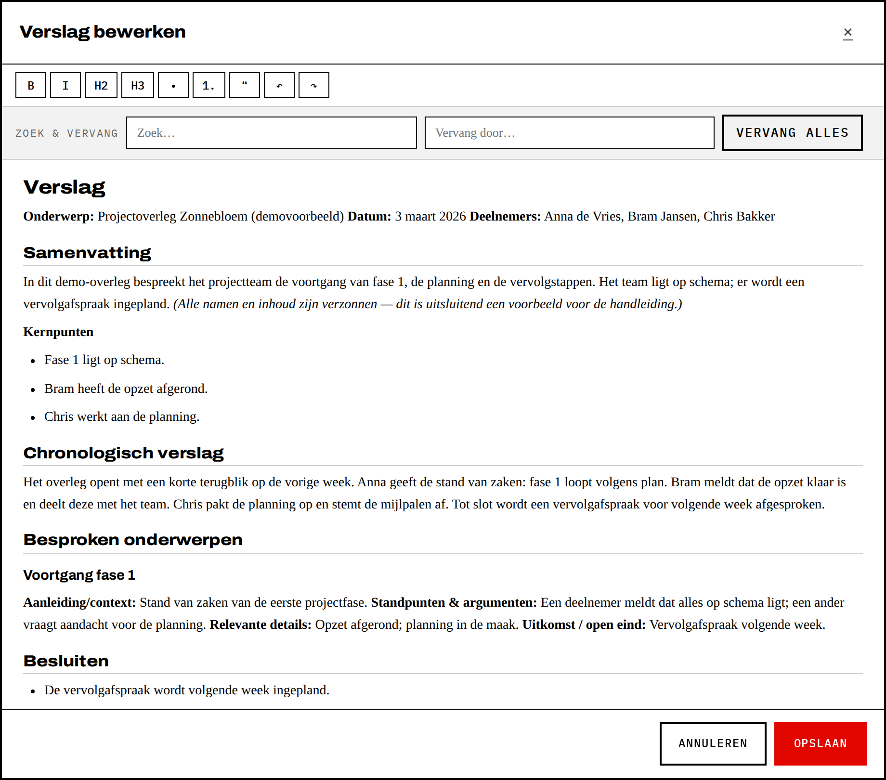
Elke opname krijgt een unieke, geheime sessie-code. Bewaar die goed: het is de enige sleutel tot jouw resultaat. Naast de code kun je altijd het originele geluidsbestand downloaden. Wil je later terugkomen, gebruik dan de kaart “Al een sessiecode? Haal je resultaat op” onderaan het startscherm (of de knop Ophalen via code rechtsboven): plak je code en klik op Ophalen.
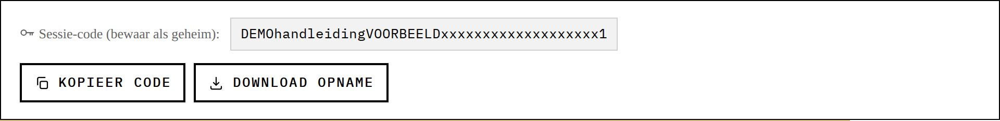
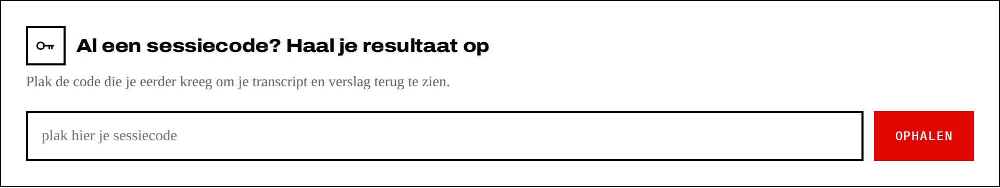
Benieuwd hoe we het doen, en hoe lang je gemiddeld op je transcript en verslag wacht? Onderaan het startscherm (en via Statistieken rechtsboven) vind je een openbaar en volledig anoniem dashboard: aantallen, tijden, upload-vs-opname, verslagkeuzes, verwerkingstijd en tevredenheid. Geen persoonsgegevens, geen namen, geen inhoud — alleen geaggregeerde cijfers.
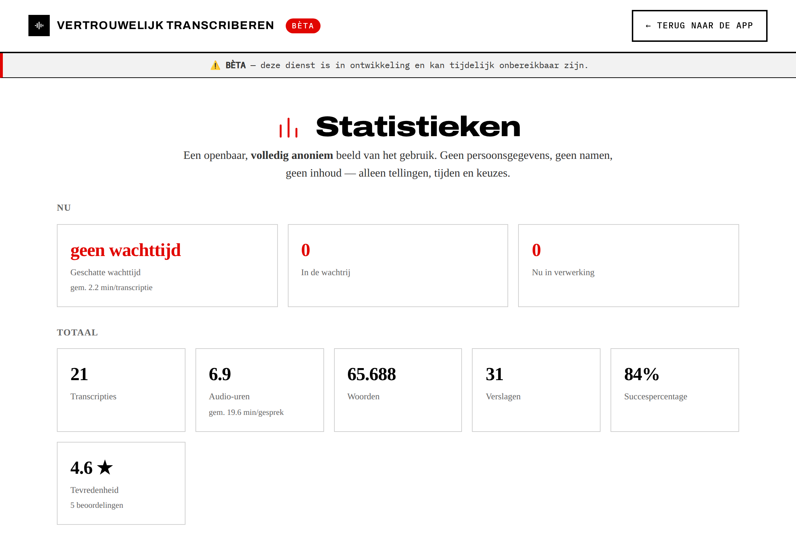
Handig als je meer wilt dan "opname erin, verslag eruit". Deze opties staan verspreid op het start- en resultaatscherm; hieronder alles op een rij. Klik om uit te klappen.
Mag je een gesprek niet opnemen, maar heb je wél aantekeningen? Of heb je al een transcript?
Kies bovenaan de upload-kaart Transcript of aantekeningen en plak of upload
je tekst (.txt, .md, Word .docx, .rtf,
.odt). Er wordt zonder transcriptie direct een verslag gemaakt. Kies het soort
bron: ruwe aantekeningen (het model structureert en verzint niets bij) of
woordelijk transcript.
In plaats van een verslag kun je een vaste lijst vragen laten beantwoorden. Klap bij de verslag-opties Of: beantwoord vragen uit een sjabloon uit en plak of upload je vragen (één per regel; ook Word/.docx). Elke vraag wordt beantwoord op basis van het gesprek, in jouw volgorde; staat een antwoord niet in het materiaal, dan schrijft het model dat expliciet (“niet in het materiaal besproken”). Kan ook achteraf op het resultaatscherm.
Gaan bepaalde namen, vaktermen of afkortingen vaak fout? Kies bij Woordenlijst /
jargon een lijst uit het menu, of plak je eigen termen (één per regel). Dat helpt
twee keer: de transcriptie herkent de termen beter en het verslag gebruikt
de juiste spelling. De keuzelijsten komen uit een map op de server (glossaries/) —
je beheerder kan er per organisatie/domein eigen lijsten in zetten (zie de
deploy-handleiding). Werkt ook zonder verslag (dan alleen voor de transcriptie).
Staat sprekersherkenning aan, dan kun je die per opname aanzetten onder Geavanceerde opties (bij het verslag). De opname wordt dan automatisch in sprekers verdeeld (SPREKER A/B/…); op het resultaatscherm luister je per spreker een fragment en vul je namen in (die blijven lokaal). Klopt de indeling niet, gebruik dan Opnieuw indelen, eventueel met een opgegeven aantal deelnemers.